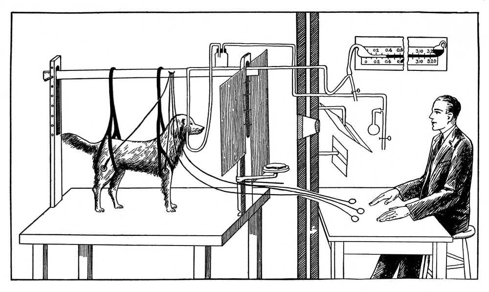

2.3 - How Brains Learn
Think of something that was very hard the first time: riding a bike, writing in a new alphabet, a move in a sport. Now it’s easy. You don’t even think about it.
What changed? Not your hands. Your brain changed. Practice made some connections between your neurons stronger.
Today, you watch your own brain learn something new, and you measure it.
Today’s Plan (40 minutes)
- 🔥 Warm Up Your other hand 6 min
- 👥 Learn Together Stronger connections, and Pavlov’s dogs 10 min
- 🛠️ Try It Mirror drawing 17 min
- 💬 Talk About It Is it the same kind of learning? 7 min
- 🤝 synapse: the tiny gap where one neuron passes a signal to the next
- 🔔 conditioning: learning to connect two things that happen together, like a sound and food
- 📉 learning curve: a graph that shows how you get better with practice
Printable lesson sheet - the sheet you write on today.
🔥 Warm Up
Write your full name with your other hand (the one you don’t usually write with). Your partner times you.
Do it 3 times. Write the times on your sheet. Did you get faster?
👥 Learn Together
2.3.1 - Practice Makes Connections Stronger
Did you get faster with your other hand? Your hand didn’t change in 3 tries. Your brain did.
When you do something new, a group of neurons fires together. When you do it again and again, the synapses between those neurons get stronger. The signal passes more easily. The skill gets faster and smoother.
Scientists say it with a short rhyme:
Neurons that fire together, wire together.
When you stop practicing, unused connections can get weaker. That’s why you forget things you never use.
Ivan Pavlov was a scientist in Russia. He studied dogs.

- Dogs drool (make saliva in their mouths) when they see food. Nobody teaches them this.
- Pavlov’s team played a sound, a clicking metronome, right before they gave the dogs food. They did this many times.
- Soon, the dogs drooled when they heard the clicking, with no food at all.
The dogs’ brains connected the sound with food. This kind of learning is called conditioning.
In a brain, learning means changing how strong the connections are between neurons.
AI copies this idea. In a neural network, the strength of each connection is a number called a weight. Learning means changing the weights. You’ll see this in the next lesson.
🛠️ Try It
2.3.2 - Mirror Drawing
Move a green dot around a star with a “mirror” pen. When your hand moves down, the dot moves up. Your brain has never done this before!
- Press anywhere in the box and drag. You don’t have to touch the dot. It moves when your hand moves, but flipped.
- Move the dot all the way around the star, back to the green ring. Stay inside the blue path. If you let go, press again and keep going. (The clock stops while you let go.)
- Do 5 tries with the same pen. Write your time and mistakes on your sheet after each try.
- Make a graph of your times. This is your learning curve.
| Try | Pen | Time (seconds) | Mistakes |
|---|
On a touch screen, use your finger. On a laptop, a mouse is easier than a touch pad, but a touch pad works too.
For most people, the time drops a lot after the first tries. Then it drops more slowly. Your brain was building new connections between what your eyes see and how your hand moves.
💬 Talk About It
Your brain learns by changing synapses. AI learns by changing numbers (weights). Is that the same kind of learning?
And think about Pavlov: is there a sound that makes you reach for your phone?
- My brain learned the mirror drawing because …
- Brain learning and AI learning are the same / different because …
- The sound … makes me want to … . That’s like Pavlov’s dogs because …
🚀 Go Further
Use the mirror drawing tool in 2.3.2 again, with a partner.
- Do 2 more tries with the same pen as yesterday. Are you still fast? Did your brain keep the skill?
- Switch the pen to left and right flipped. Do 3 tries. Write your times on your sheet.
- Is it hard again? Why?
Your brain learned one skill: up and down flipped. It didn’t learn every mirror skill. A new mirror needs new connections.
AI is like this too. An AI trained for one job is often bad at a job that looks almost the same.
Put a mirror up on a desk. Put paper with a star in front of it. Put a book over your hand so you can only see your hand in the mirror. Trace the star. Is it the same as the computer?
Find three times that a sound or a picture makes you or someone in your family do something automatically. (Phone sounds, a song from an ad, a school bell.) Who taught you to react to it? Was it on purpose?
🔭 Explore More: the taxi drivers whose brains grew. Read it on your own, if you want to learn more.